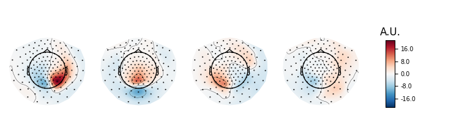
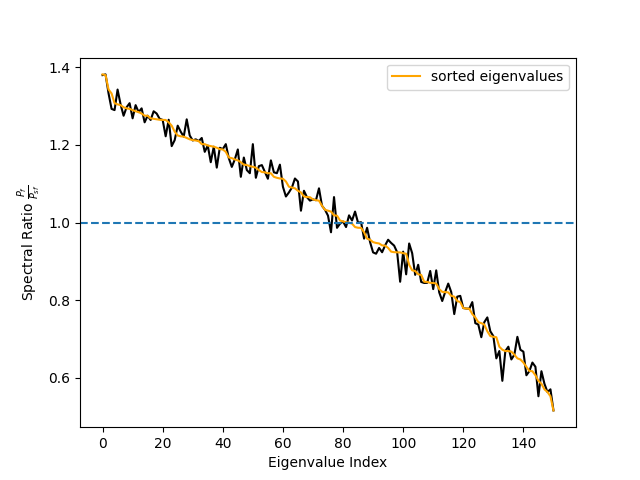

Note
Click here to download the full example code
Compute Sepctro-Spatial Decomposition (SSD) spatial filters¶
In this example, we will compute spatial filters for retaining oscillatory brain activity and down-weighting 1/f background signals as proposed by 1. The idea is to learn spatial filters that separate oscillatory dynamics from surrounding non-oscillatory noise based on the covariance in the frequency band of interest and the noise covariance based on surrounding frequencies.
Define parameters
fname = data_path() + '/SubjectCMC.ds'
# Prepare data
raw = mne.io.read_raw_ctf(fname)
raw.crop(50., 110.).load_data() # crop for memory purposes
raw.resample(sfreq=250)
raw.pick_types(meg=True, eeg=False, ref_meg=False)
freqs_sig = 9, 12
freqs_noise = 8, 13
ssd = SSD(info=raw.info,
reg='oas',
sort_by_spectral_ratio=False, # False for purpose of example.
filt_params_signal=dict(l_freq=freqs_sig[0], h_freq=freqs_sig[1],
l_trans_bandwidth=1, h_trans_bandwidth=1),
filt_params_noise=dict(l_freq=freqs_noise[0], h_freq=freqs_noise[1],
l_trans_bandwidth=1, h_trans_bandwidth=1))
ssd.fit(X=raw.get_data())
Out:
ds directory : /home/circleci/mne_data/MNE-fieldtrip_cmc-data/SubjectCMC.ds
res4 data read.
hc data read.
Separate EEG position data file not present.
Quaternion matching (desired vs. transformed):
0.33 78.32 0.00 mm <-> 0.33 78.32 0.00 mm (orig : -71.62 40.46 -256.48 mm) diff = 0.000 mm
-0.33 -78.32 -0.00 mm <-> -0.33 -78.32 -0.00 mm (orig : 39.27 -70.16 -258.60 mm) diff = 0.000 mm
114.65 0.00 -0.00 mm <-> 114.65 0.00 0.00 mm (orig : 64.35 66.64 -262.01 mm) diff = 0.000 mm
Coordinate transformations established.
Polhemus data for 3 HPI coils added
Device coordinate locations for 3 HPI coils added
Picked positions of 4 EEG channels from channel info
4 EEG locations added to Polhemus data.
Measurement info composed.
Finding samples for /home/circleci/mne_data/MNE-fieldtrip_cmc-data/SubjectCMC.ds/SubjectCMC.meg4:
System clock channel is available, checking which samples are valid.
75 x 12000 = 911610 samples from 191 chs
390 samples omitted at the end
Current compensation grade : 0
Reading 0 ... 72000 = 0.000 ... 60.000 secs...
29 events found
Event IDs: [ 196608 262144 327680 393216 458752 67108864 67174400
134742016 136314880 268435456]
29 events found
Event IDs: [ 196608 262144 327680 393216 458752 67108864 67174400
134742016 136314880 268435456]
Removing 5 compensators from info because not all compensation channels were picked.
Setting up band-pass filter from 9 - 12 Hz
FIR filter parameters
---------------------
Designing a one-pass, zero-phase, non-causal bandpass filter:
- Windowed time-domain design (firwin) method
- Hamming window with 0.0194 passband ripple and 53 dB stopband attenuation
- Lower passband edge: 9.00
- Lower transition bandwidth: 1.00 Hz (-6 dB cutoff frequency: 8.50 Hz)
- Upper passband edge: 12.00 Hz
- Upper transition bandwidth: 1.00 Hz (-6 dB cutoff frequency: 12.50 Hz)
- Filter length: 825 samples (3.300 sec)
Setting up band-pass filter from 8 - 13 Hz
FIR filter parameters
---------------------
Designing a one-pass, zero-phase, non-causal bandpass filter:
- Windowed time-domain design (firwin) method
- Hamming window with 0.0194 passband ripple and 53 dB stopband attenuation
- Lower passband edge: 8.00
- Lower transition bandwidth: 1.00 Hz (-6 dB cutoff frequency: 7.50 Hz)
- Upper passband edge: 13.00 Hz
- Upper transition bandwidth: 1.00 Hz (-6 dB cutoff frequency: 13.50 Hz)
- Filter length: 825 samples (3.300 sec)
Computing rank from data with rank=None
Using tolerance 2.5e-12 (2.2e-16 eps * 151 dim * 75 max singular value)
Estimated rank (mag): 151
MAG: rank 151 computed from 151 data channels with 0 projectors
Reducing data rank from 151 -> 151
Estimating covariance using OAS
Done.
Computing rank from data with rank=None
Using tolerance 1.2e-12 (2.2e-16 eps * 151 dim * 36 max singular value)
Estimated rank (mag): 151
MAG: rank 151 computed from 151 data channels with 0 projectors
Reducing data rank from 151 -> 151
Estimating covariance using OAS
Done.
Let’s investigate spatial filter with max power ratio. We will first inspect the topographies. According to Nikulin et al. 2011 this is done by either inverting the filters (W^{-1}) or by multiplying the noise cov with the filters Eq. (22) (C_n W)^t. We rely on the inversion approach here.
pattern = mne.EvokedArray(data=ssd.patterns_[:4].T,
info=ssd.info)
pattern.plot_topomap(units=dict(mag='A.U.'), time_format='')
# The topographies suggest that we picked up a parietal alpha generator.
# Transform
ssd_sources = ssd.transform(X=raw.get_data())
# Get psd of SSD-filtered signals.
psd, freqs = mne.time_frequency.psd_array_welch(
ssd_sources, sfreq=raw.info['sfreq'], n_fft=4096)
# Get spec_ratio information (already sorted).
# Note that this is not necessary if sort_by_spectral_ratio=True (default).
spec_ratio, sorter = ssd.get_spectral_ratio(ssd_sources)
# Plot spectral ratio (see Eq. 24 in Nikulin 2011).
fig, ax = plt.subplots(1)
ax.plot(spec_ratio, color='black')
ax.plot(spec_ratio[sorter], color='orange', label='sorted eigenvalues')
ax.set_xlabel("Eigenvalue Index")
ax.set_ylabel(r"Spectral Ratio $\frac{P_f}{P_{sf}}$")
ax.legend()
ax.axhline(1, linestyle='--')
# We can see that the initial sorting based on the eigenvalues
# was already quite good. However, when using few components only
# the sorting might make a difference.
- 
- 
Out:
Effective window size : 16.384 (s)
Effective window size : 1.000 (s)
Let’s also look at the power spectrum of that source and compare it to to the power spectrum of the source with lowest SNR.
below50 = freqs < 50
# for highlighting the freq. band of interest
bandfilt = (freqs_sig[0] <= freqs) & (freqs <= freqs_sig[1])
fig, ax = plt.subplots(1)
ax.loglog(freqs[below50], psd[0, below50], label='max SNR')
ax.loglog(freqs[below50], psd[-1, below50], label='min SNR')
ax.loglog(freqs[below50], psd[:, below50].mean(axis=0), label='mean')
ax.fill_between(freqs[bandfilt], 0, 10000, color='green', alpha=0.15)
ax.set_xlabel('log(frequency)')
ax.set_ylabel('log(power)')
ax.legend()
# We can clearly see that the selected component enjoys an SNR that is
# way above the average power spectrum.
Epoched data¶
Although we suggest to use this method before epoching, there might be some situations in which data can only be treated by chunks.
# Build epochs as sliding windows over the continuous raw file.
events = mne.make_fixed_length_events(raw, id=1, duration=5.0, overlap=0.0)
# Epoch length is 5 seconds.
epochs = Epochs(raw, events, tmin=0., tmax=5,
baseline=None, preload=True)
ssd_epochs = SSD(info=epochs.info,
reg='oas',
filt_params_signal=dict(l_freq=freqs_sig[0],
h_freq=freqs_sig[1],
l_trans_bandwidth=1,
h_trans_bandwidth=1),
filt_params_noise=dict(l_freq=freqs_noise[0],
h_freq=freqs_noise[1],
l_trans_bandwidth=1,
h_trans_bandwidth=1))
ssd_epochs.fit(X=epochs.get_data())
# Plot topographies.
pattern_epochs = mne.EvokedArray(data=ssd_epochs.patterns_[:4].T,
info=ssd_epochs.info)
pattern_epochs.plot_topomap(units=dict(mag='A.U.'), time_format='')

Out:
Not setting metadata
Not setting metadata
12 matching events found
No baseline correction applied
0 projection items activated
Loading data for 12 events and 1251 original time points ...
1 bad epochs dropped
Setting up band-pass filter from 9 - 12 Hz
FIR filter parameters
---------------------
Designing a one-pass, zero-phase, non-causal bandpass filter:
- Windowed time-domain design (firwin) method
- Hamming window with 0.0194 passband ripple and 53 dB stopband attenuation
- Lower passband edge: 9.00
- Lower transition bandwidth: 1.00 Hz (-6 dB cutoff frequency: 8.50 Hz)
- Upper passband edge: 12.00 Hz
- Upper transition bandwidth: 1.00 Hz (-6 dB cutoff frequency: 12.50 Hz)
- Filter length: 825 samples (3.300 sec)
Setting up band-pass filter from 8 - 13 Hz
FIR filter parameters
---------------------
Designing a one-pass, zero-phase, non-causal bandpass filter:
- Windowed time-domain design (firwin) method
- Hamming window with 0.0194 passband ripple and 53 dB stopband attenuation
- Lower passband edge: 8.00
- Lower transition bandwidth: 1.00 Hz (-6 dB cutoff frequency: 7.50 Hz)
- Upper passband edge: 13.00 Hz
- Upper transition bandwidth: 1.00 Hz (-6 dB cutoff frequency: 13.50 Hz)
- Filter length: 825 samples (3.300 sec)
Computing rank from data with rank=None
Using tolerance 2.4e-12 (2.2e-16 eps * 151 dim * 73 max singular value)
Estimated rank (mag): 151
MAG: rank 151 computed from 151 data channels with 0 projectors
Reducing data rank from 151 -> 151
Estimating covariance using OAS
Done.
Computing rank from data with rank=None
Using tolerance 1.2e-12 (2.2e-16 eps * 151 dim * 35 max singular value)
Estimated rank (mag): 151
MAG: rank 151 computed from 151 data channels with 0 projectors
Reducing data rank from 151 -> 151
Estimating covariance using OAS
Done.
References¶
- 1
Vadim V Nikulin, Guido Nolte, and Gabriel Curio. A novel method for reliable and fast extraction of neuronal EEG/MEG oscillations on the basis of spatio-spectral decomposition. NeuroImage, 55(4):1528–1535, 2011. doi:10.1016/j.neuroimage.2011.01.057.
Total running time of the script: ( 0 minutes 16.196 seconds)
Estimated memory usage: 113 MB